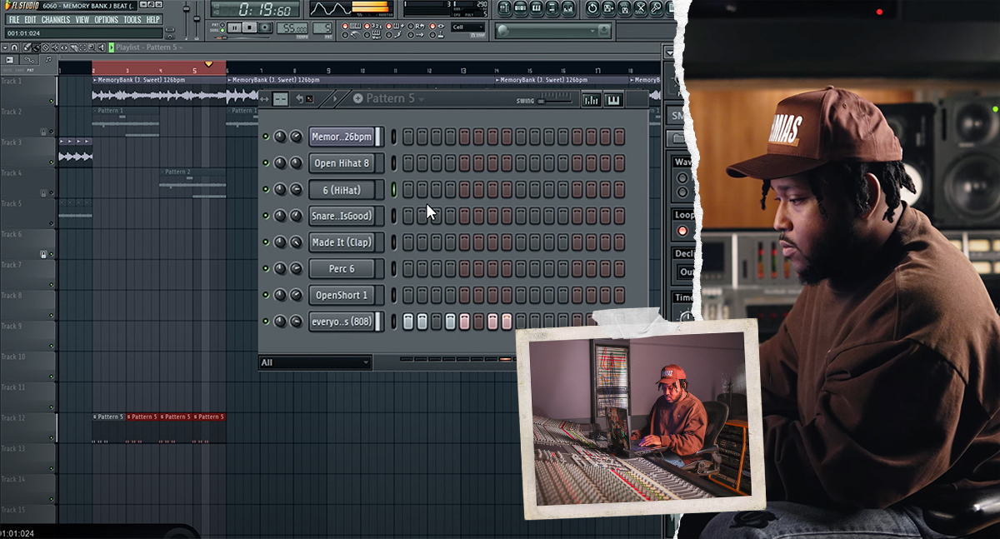
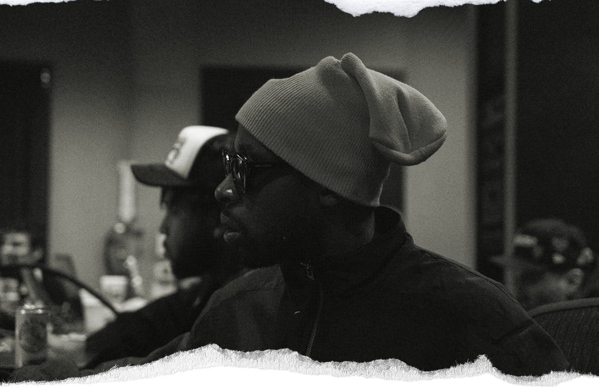
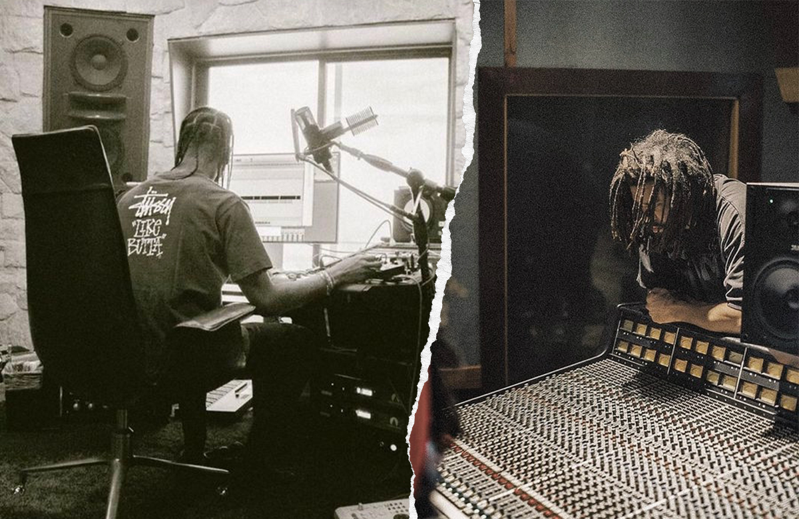

In the Mix With The Masters video Boi-1da elaborates on his early days, remembering, "I always had a love and passion for music. I got into it in ninth grade and never stopped. One my biggest inspirations was Dr. Dre. I think he's the greatest of all time. I was really inspired by the quality of his sounds and his music, and I used to mimic and remake his beats, just to match the quality. Everything sounds perfect. He's my GOAT. Other huge inspirations were Timbaland, Pharrell, Swizz, The Alchemist, and Havoc."
"When I was 15 or 16, I crushed the beat battles in Toronto for three years, and that's where I met a lot of people and made lots of connections, and learned lots of things. I was a super timid kid, and was even more scared because I think I was the youngest in the competition, and there were dudes talking about the 'ASR10' or whatever. When they asked me what I was using, I'm like, 'eh, Fruity Loops 3.' But as soon as I heard the first person play their beat, I was like, 'man, it's not that good, I'm going to kill those guys.' So just dive straight into anything you love and don't be scared, because it's like jumping into cold water. You're scared for a second, but it goes the moment you get to doing what you want to do."
Mimicking Dr Dre's beats and making connections with people helped Boi-da shape his sound, which he says, is "very hard-hitting, very simplistic, and catchy and infectious. My process is so not technical. I really like to keep things simple and dry for the most part. Everything I do when producing is software-based. I'll use a midi keyboard sometimes to play notes or bass lines, but usually I keep everything in software, because I feel comfortable with that, and it's quick."
"Things come together quickly in FL Studio for me. The reason I'm able to make beats so quickly is that I'm 20-plus years into doing this. So it's like a muscle memory at this point. It's just reflex and I know where everything is and I know what I'm doing. The most important thing is getting it down to that point. I'm not advising anybody to make music quickly, but if it comes out quickly, because you know what you're doing, then so be it."

3. FLSTUDIO SINCE 2003
Fruity Loops, since 2003 called FL Studio, continues to be Boi-1da preferred DAW, which he runs on a PC. He describes some of the favourite plugins that he uses within this environment, and demonstrates them in the video. "Some of my favorite virtual instruments are Octave and Scorch, made by My Best Friend Jacob, who makes really dope VSTs. Octave has a really deep sound bank, with sounds that are very unorthodox. These plugins have really cool sounds. Simplistic. Straight to the point. You can just build something so easily off that. I love it."
"I don't use that many effects to modify my sound, but there are a few, for example Camel Audio CamelSpace and CamelPhat, and also some of the FabFilter effects. But a lot of the time, it's just finding the right sound. Sometimes you don't even have to alter anything. I also find cool sounds and drum kits, percussion and different types of loops on Splice. Sometimes I'll go shopping, like I'm at a grocery store. I like to go into different strange sound banks and see if I can find quirky stuff, even animal noises and crickets. There's stuff everywhere on Splice, and I'm just all over it."
"The way that I produce and the way I move my sounds around, is in kind of a strange and unorthodox way. I do have certain go-to sounds, but they're really basic. When it comes to loops and other random sounds, I deliberately scatter my sounds all over the place, because I don't want to go back to the same sounds. A lot of people get used to going back to the same sounds, but I don't like to hear the same sounds."
"The sounds in my folders looks like a gigantic mess, but it works out. I'll scroll down and just click random stuff and find new sounds: drums that I like, a new kick, a new snare, a clap, a new loop, a piano sound, a random piano sound, a bass. It could be anything. It's a strange way of working, but it works for me."
4. RECREATING MAFIA
Boi-1da stresses that his working environment is entirely in the box, and he rarely engages directly with anything out of the box. "I've never tracked anybody's vocals. It's not that I can't, it's just that there are specialists for that. I'm good at making things sound good, and I have my opinions, but for the real technical side of things, especially when it comes to recording and signal chains, I let the pros be the pros."
"I'll get live keys, live bass guitar, different live things, from different places, whether live in the studio, or from virtual instruments. I used to work a lot at Electric Lady in New York, and they have tons of Moogs and synths and whatnot, and we could just record them live and create ideas from that. So I use just anything that's there really, I just make it happen."
"Often when I'm producing records and start with drum patterns, I'll use multiple kicks or a different-sounding kick for a low end part and then multiple snares and different percussions, including tiny percussion sounds in the background or accents, and so on. It really depends on how I feel."
"There's never any formula to anything that I do. It's super random. It's just whatever I feel like making."
Boi-1da's reliance on an in-the-box approach is literally the case with the laptop that he uses. "I have a Sager, which is a pretty powerful PC. The stats are crazy. I use it because I travel a lot. I like being in different places when I work and having different vibes. So I've been working a lot with huge, amazing speakers, but I also base everything I do on the speakers that the laptop comes with, because they're pretty good and they pump pretty hard."
"If it sounds good on my laptop speakers, it usually sounds good on everything. That's my testing space when I'm mixing. I analyze the low end on bigger speakers with a subwoofer, but if it's peaking too much on the laptop speakers, you can't always really recognize that on big speakers, especially when going from studio to studio. Speakers are different, rooms are different, and it sounds different. That's why I base everything on my laptop computer speakers. And I enjoy making music on my Bose headphones. The quality and the low end are amazing."

5. JAHAAN SWEET
In the video Boi-1da spends considerable time talking through the writing process for "Mafia," with audio examples and screen shots of the writing session. "It's a track that I started with Jahaan Sweet. We were just vibing, I'm not even sure in which studio. It came together super quick. Jahaan was playing some keyboards, and he played this beautiful, simple part, which you can hear here. I think he was just freestyling. He's such a genius when it comes to that."
"We were like, 'yo, let's work with that,' so we ended up looping the part, and repeating it over and over. I added a drum pattern, which is very unorthodox. Unless I'm wrong, I've never heard a drum pattern like this, especially at the tempo it was. I wanted to keep it interesting, and make something that grooves differently. After that I added the 808. The end result has a nice bounce to it, the bop is perfect. It took me quite a while to figure out the bop. I tried different 808 placements, and eventually figured it out and got a pattern that I fell in love with."
"After that I added some simplistic hi-hats, and then it started coming together. I found a little snare sound, a snare accent, a little clap, and put them on the track as well. I also threw in some little percussion, to make it groove a bit more. The original bpm also was faster. At one point I was playing the track through a DJ program, and I accidentally hit my mouse and it ended up sounding way slower, and that's what made the vibe."
"We wanted to add a part where the song builds up, so Jahaan added another piano to make it sound fuller when it was getting to the hook. It sounds kind of like a filtered horn. There's a higher piano and a deeper one at the same time. That was it. I was like, 'yo, it is finished.' I didn't want to add more, because it sounded enough for someone to get their point across it. I never try to do too much. The simpler you keep it, the easier it is for the artist to paint on the canvas."

6. TRAVIS SCOTT AND J COLE
The next stage was for Travis Scott to add his vocals. "He did his thing," says Boi-1da, "and he killed it. His voice is like an instrument. J. Cole also added the hook at the end. He pulled up at the studio and liked the beat and just wanted to lay down an idea. It was as simple as that. Travis took the song to another level. When he played me the song, my mind was blown. It was Travis being Travis. He's one of the greats."
"One thing I would tell everybody is that there's no blueprint. Anything can happen at any time, any place. The studio has to have a comfortable vibe. Many of the artists are friends. We go to the studio and we talk, we vibe, and then music happens. You use your discernment to figure out the mood, and what's going on. Sometimes you're just sitting there and no music gets made. You just have to be aware."
"I'm cool with however anything goes, and I never try to chase a trend. I'm making music because I love it. If you like it, you like it, if you don't, you don't. I'm also realistic about it. What goes up must come down at some point. Right now I'm having fun making music, having fun with these opportunities that God blessed me with, and I'm doing it till I can't do it anymore. I've been blessed with these opportunities and I don't let anything steer me in any direction. I do what I want and that's it."